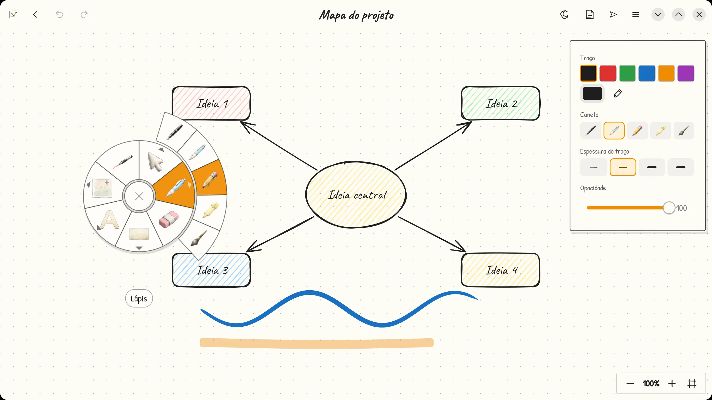
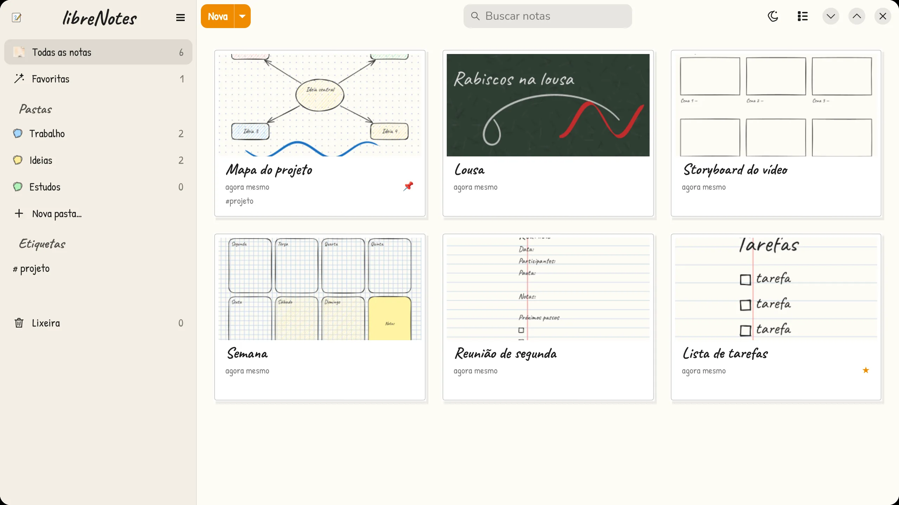
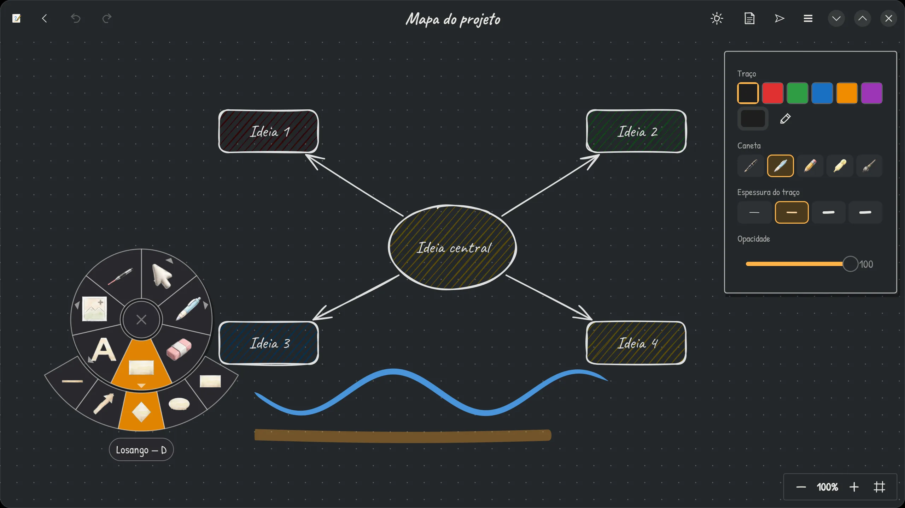

Quadro infinito
Formas, setas que se prendem às formas, texto, notas adesivas, molduras, imagens e ponteiro laser. Zoom e pinça sem limite.
O app de anotações para Windows, Mac e Linux com quadro infinito para rabiscar, planejar e estudar. Canetas com pressão, anotações em PDF, pastas e onze tipos de papel. Gratuito, sem conta e sem anúncios.

O quadro infinito do Excalidraw com a organização e as canetas do Samsung Notes, num app só.
Formas, setas que se prendem às formas, texto, notas adesivas, molduras, imagens e ponteiro laser. Zoom e pinça sem limite.
Pressão e inclinação, cinco canetas (tinteiro, lápis, marca-texto...) e borracha na ponta da caneta. Segure parado no fim do traço e ele vira uma forma perfeita.
Pastas coloridas, etiquetas, favoritas e lixeira. A busca encontra palavras mesmo sem acento. Modelos prontos de tarefas, reunião e mapa mental.
Onze tipos de folha: pautada, quadriculada, pontilhada, Cornell, pauta musical, lousa e mais. Importe um PDF e escreva por cima de cada página.
Rejeição de palma enquanto você escreve. Toque com dois dedos para desfazer e com três para refazer. Pensado para tablets e telas touch.
Nada de nuvem obrigatória nem conta: tudo fica no seu computador. Proteja notas com senha e exporte em PDF, PNG ou SVG.
Tema claro de papel, lousa no escuro, e uma tela inicial que parece uma estante de cadernos.


Grátis para Windows, Mac e Linux. Escolha instalar ou a versão portátil, que roda direto da pasta (até de um pendrive) sem instalar nada.
Windows 10 e 11, 64 bits
Portátil: extraia a pasta e abra o libreNotes.exe. Se o Windows avisar que o app não é reconhecido, clique em Mais informações › Executar assim mesmo.
macOS 13 ou mais novo
Sem instalar: .zip Apple Silicon · .zip Intel
Abra o .dmg e arraste para Aplicativos. Na primeira vez, libere em Ajustes do Sistema › Privacidade e Segurança › Abrir Mesmo Assim.
64 bits, distros recentes
AppImage: marque como executável e abra. Para instalar no lançador, sem senha de administrador:
tar xzf libreNotes-*.tar.gz ./libreNotes/install.sh
Linux: GTK 4.20+ e libadwaita 1.8+ (Arch, CachyOS, SteamOS, Fedora 43+, Ubuntu 25.10+ e similares). Os avisos do Windows e do Mac aparecem só porque o app não tem assinatura digital paga. Todas as versões e novidades.
O que mais perguntam sobre o libreNotes.
Sim. Não tem anúncios, assinatura nem versão paga, e não pede conta. Quem quiser pode apoiar o projeto com uma doação.
Sim. Há instalador e versão portátil para Windows 10 e 11 (64 bits) e versões para macOS 13 ou mais novo, tanto para Apple Silicon quanto para Mac com Intel. No Linux, há AppImage e pacote instalável.
Sim. Reconhece pressão e inclinação da caneta, a ponta de borracha e os botões laterais. Tem rejeição de palma e gestos de toque: dois dedos desfazem e três refazem.
Sim. Ao importar um PDF, cada página vira uma folha travada para você escrever por cima. Depois é possível exportar em PDF, PNG ou SVG.
Sim. Ele importa arquivos .excalidraw e bibliotecas .excalidrawlib. As notas são salvas no formato próprio .lnote.
No seu computador: em ~/.local/share/librenotes no Linux, em %APPDATA%\librenotes no Windows e em ~/Library/Application Support/librenotes no Mac. Na versão portátil, uma pasta librenotes-data ao lado do programa guarda as notas junto com ele. Nada vai para a nuvem sem você pedir, e notas podem ser protegidas com senha.
Em distribuições com GTK 4.20 ou mais novo e libadwaita 1.8 ou mais nova, como Arch, CachyOS, SteamOS, Fedora 43+ e Ubuntu 25.10+.
Sentiu falta de alguma coisa? Peça! As ideias mais votadas entram primeiro na fila de desenvolvimento.
Descreva o que você quer fazer e como imagina o recurso. Um formulário curto guia você.
Sugerir um recursoVeja o que outras pessoas já pediram e dê 👍 nas que você também quer. Assim fica claro o que é mais importante.
Ver ideias e votarAs sugestões ficam no GitHub, que pede uma conta gratuita. Sem conta? Mande sua ideia por e-mail.
O libreNotes não tem anúncios, assinatura nem versão paga. Se ele te ajuda a estudar, trabalhar ou criar, considere fazer uma doação de qualquer valor. Cada contribuição paga horas de desenvolvimento e mantém o projeto vivo.
Obrigado por apoiar! ✏️
Escaneie o QR code ou copie o endereço.